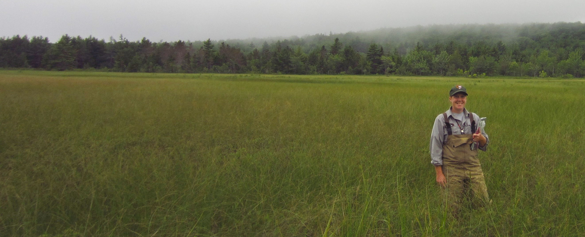

Kate Miller GitHub landing page
R training websites
IMD 2022
Scientists Training- Intro to R: Developed Prep for Training and
Visualizing Spatial Data.
IMD
2022 Scientists Training- Advanced R: Developed Prep for Training,
Data Retrieval, GIS in R, Downloading FIA data, R Markdown, and R
Packages.
ACAD R
Training Fall 2020: Intro to R training for Acadia NP Resource
Management staff.
Forest
Crew R Training 2020: Intro to R training for NETN/MIDN forest crew
during summer 2020.
Github code repositories
-
Github profile: KateMMiller
-
forestMIDN: R
package for summarizing and compiling MIDN forest data
-
forestNETN: R
package for summarizing and compiling NETN forest data
-
forestQAQC: R
Markdown reports for weekly QA/QC, QA/QC visit comparisons, and
summarizing data from previous visits.
-
forestTrends:
R package for using non-parametric bootstrap to assess temporal linear
trends with fixed plot data and for non-parametric power simulations of
linear trends.
-
climateNETN: R
package for downloading, summarizing and visualizing monthly climate
data for NETN parks by park centroid. See
NETN climate
summaries: for the latest summaries in NETN parks based on NOAA
monthly gridded climate data.
-
wetlandACAD: R
package for summarizing and compiling freshwater wetland data in Acadia
National Park
-
wetlandViz: R
shiny app to visualize freshwater wetland data in Acadia National Park.
Contact me for a link to the visualizer.
-
waterNETN: R
package for importing, querying, summarizing, and visualizing NETN water
monitoring data. See the
How-To website
for tips on installing and using this package.
Other websites/Information
CV
Northeast Temperate Network
homepage
Mid-Atlantic
Network homepage
Google
Scholar publications
ResearchGate
